Chapter 10
Error propagation
All the methods and equations presented thus far have assumed that all
parameters are either known or measured with infinite precision. In
reality, however, the analytical equipment used to measure isotopic
compositions, elemental concentrations and radioactive half-lives is
not perfect. It is crucially important that we quantify the resulting
analytical uncertainty before we can reliably interpret the resulting
ages.
For example, suppose that the extinction of the dinosaurs has been
dated at 65 Ma in one field location, and a meteorite impact has been dated
at 64 Ma elsewhere. These two numbers are effectively meaningless in the
absence of an estimate of precision. Taken at face value, the dates imply
that the meteorite impact took place 1 million years after the mass
extinction, which rules out a causal relationship between the two events. If,
however, the analytical uncertainty is significantly greater than 1 Myr (e.g.
64 ± 2 Ma and 65 ± 2 Ma), then such of a causal relationship remains very
plausible.
10.1 Some basic definitions
Suppose that our geochronological age (t) is calculated as a function (f) of
some measurements (X and Y ):
Suppose that we have performed a large number (n) of replicate
measurements of X and Y :
It is useful to define the following summary statistics:
- The mean:
is a useful definition for the ‘most representative’ value of X and Y ,
which can be plugged into Equation 10.1 to calculate the ‘most
representative’ age.
- The variance:
with σX and σY the ‘standard deviations’, is used to quantify the
amount of dispersion around the mean.
- The covariance:
 | (10.5) |
quantifies the degree of correlation between variables X and
Y .
X, Y , σX2, σY 2 and cov(X,Y ) can all be estimated from the
input data (X,Y ). These values can then be used to infer σt2, the
variance of the calculated age t, a process that is known as ‘error
propagation’. To this end, recall the definition of the variance (Equation
10.4):
We can estimate (ti −t) by differentiating Equation 10.1:
Plugging Equation 10.7 into 10.6, we obtain:
| σt2 | = 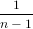∑
i=1n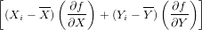2 | (10.8)
|
| | = σX2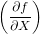2 + σ
Y 2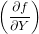2 + 2 cov(X,Y ) 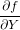 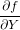 | (10.9) |
This is the general equation for the propagation of uncertainty with two
variables, which is most easily extended to more than two variables by
reformulating Equation 10.9 into a matrix form:
where the innermost matrix is known as the variance-covariance matrix
and the outermost matrix (and its transpose) as the Jacobian matrix. Let us
now apply this equation to some simple functions.
10.2 Examples
Let X and Y indicate measured quantities associated with analytical
uncertainty. And let a and b be some error free parameters.
- addition:
| t = aX + bY ⇒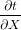 = a,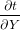 = b | |
|
| ⇒ σt2 = a2σ
X2 + b2σ
Y 2 + 2ab cov(X,Y ) | (10.11) |
- subtraction:
- multiplication:
| t = aXY ⇒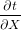 = aY,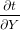 = aX | |
|
| ⇒ σt2 = (aY )2σ
X2 + (aX)2σ
Y 2 + 2a2XY cov(X,Y ) | |
|
| ⇒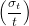2 = 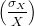2 + 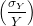2 + 2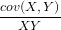 | (10.13) |
- division:
- exponentiation:
- logarithms:
- power:
10.3 Accuracy vs. precision
Recall the definition of the arithmetic mean (Equation 10.3):
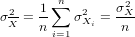
Applying the equation for the error propagation of a sum (Equation
10.11):
where we assume that all n measurements were done independently, so
that cov(Xi,Xj) = 0∀i,j. The standard deviation of the mean is known as
the standard error:
 | (10.19) |
This means that the standard error of the mean monotonically decreases
with the square root of sample size. In other words, we can arbitrarily
increase the precision of our analytical data by acquiring more data.
However, it is important to note that the same is generally not the case for
the accuracy of those data. The difference between precision and accuracy is
best explained by a darts board analogy:
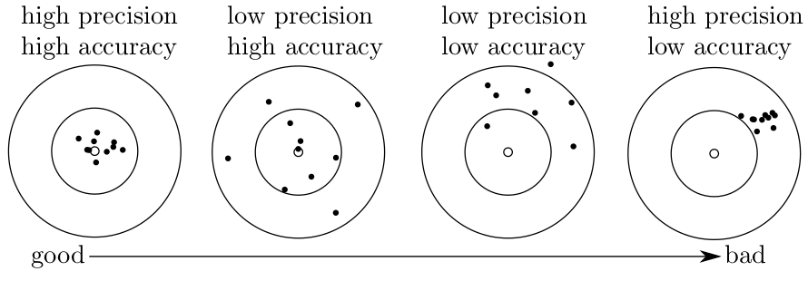
Whereas the analytical precision can be computed from the data using
the error propagation formulas introduced above, the only way to get a grip
on the accuracy is by analysing another sample of independently
determined age. Such test samples are also known as ‘secondary
standards’.